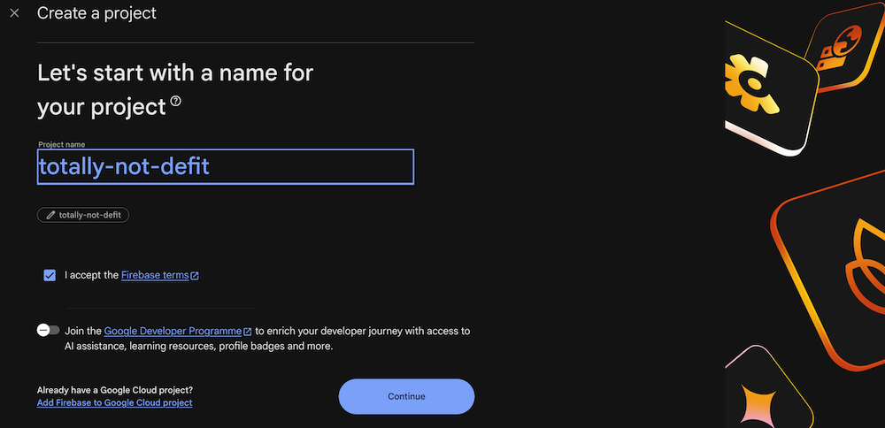
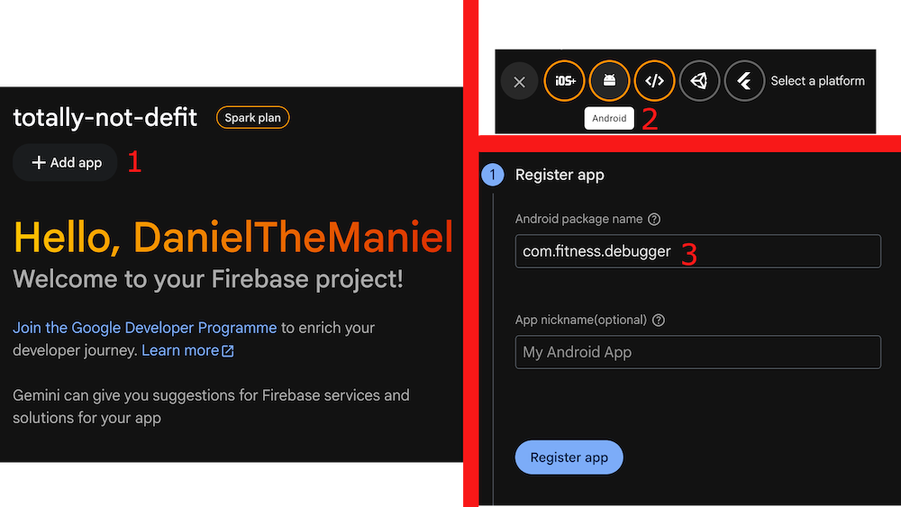
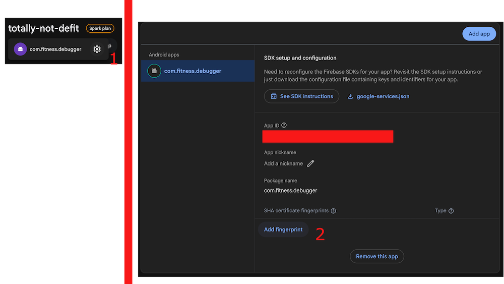
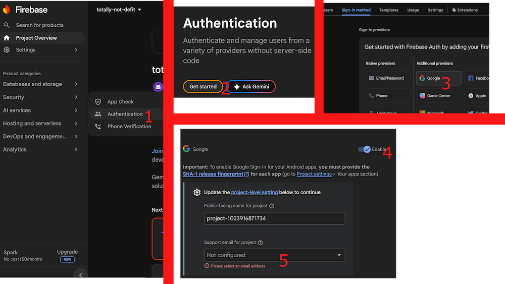
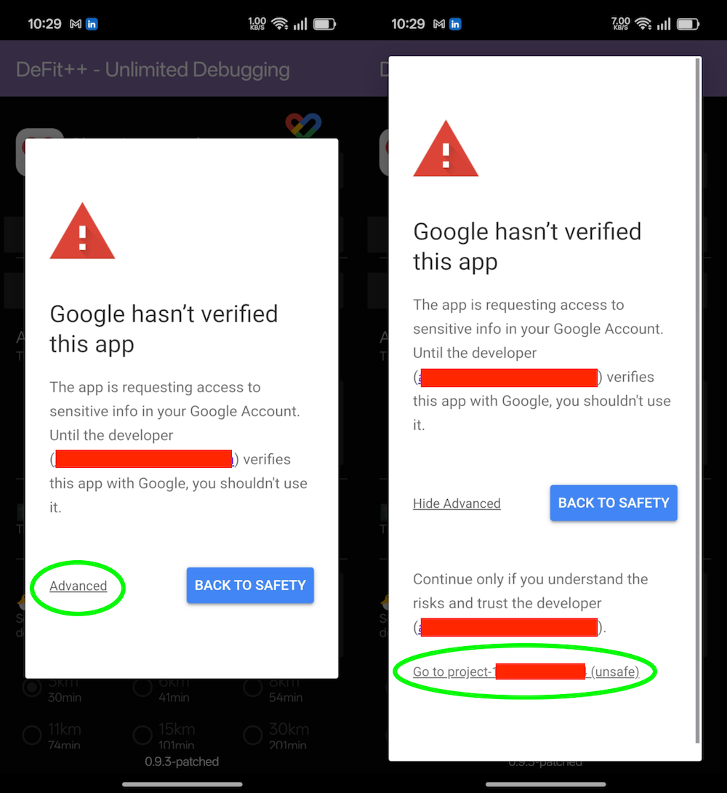

Fix Google sign-in
Set up Google sign-in for a re-signed DeFit++ APK.
DeFit 0.8.2a
Create a Firebase project
Sign in to Firebase Console and create a project for DeFit++.

Add DeFit as an Android app
Add an Android app using this exact package name:
com.fitness.debugger
The other Android-app fields do not matter for this login fix.

Add the patched APK's SHA-1
Open the Android app's settings in Firebase and add the SHA-1 fingerprint for the APK currently installed on this device.
Use the native Step 3 — Copy SHA-1 button directly below the Login Fix Tutorial
button in DeFit++.

Enable Google sign-in
In Firebase, navigate to Security → Authentication → Sign-in method, add Google as a sign-in provider, and save.

Restart DeFit++
Fully close DeFit++, reopen it, and try Google sign-in again. You will see this warning the first time you try to sign in.
